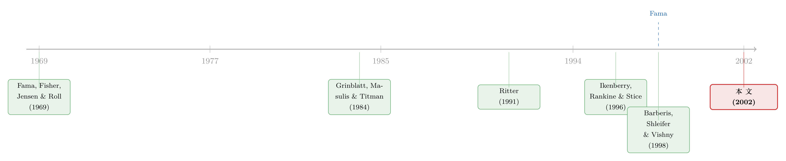

拆股这件「小事」，凭什么让市场慢了整整一年？
本文读的是 Ikenberry & Ramnath (2002, Review of Financial Studies)：作者用 1988–1997 年的拆股样本，配上同时控制市值、价值/成长、动量与价格的对照公司，发现拆股公告后一年里仍有 9.00%（t=7.93）的异常正漂移；更关键的是，分析师对拆股公司的盈利预期一直偏低、且修正得异常迟缓——这把「漂移」从「基准设错」的嫌疑里，拉回到了「市场真的反应不足」这一边。
1 一桩看上去最不该有故事的「事件」
先想一个问题：一家公司宣布把每一股拆成两股，会发生什么？
答案理应是——什么都不发生。拆股不动现金流，不改变公司的资产，不影响杠杆，也谈不上重塑管理层激励。你手里的一张披萨被切成两块，披萨还是那张披萨。按照现代金融学最朴素的直觉，拆股顶多是一个「中性」的会计动作，市场看一眼，定个价，然后翻篇。最早系统研究这件事的 Fama, Fisher, Jensen and Roll (1969) 给出的，正是这样一个让人安心的结论：价格对拆股的反应又快又干净，这几乎成了「市场有效性 (market efficiency)」最早的教科书证据之一。
可偏偏就是这桩「最不该有故事」的小事，到了 1990 年代变得不太对劲。
接着，一个自然的问题是：如果连拆股这种「无害」的公告之后，股价都还在持续地、单向地往上爬，那我们到底该把这种漂移归咎于谁？
这正是 Ikenberry 与 Ramnath 想较真的地方。
2 为什么偏偏挑拆股来「重审」反应不足
过去十几年，关于「反应不足 (underreaction)」的实证文献几乎铺天盖地：增发新股之后股价长期跑输 [Ritter (1991)、Loughran and Ritter (1995)]、回购之后长期跑赢 [Ikenberry, Lakonishok and Vermaelen (1995)]、分拆 (spin-off) 之后正漂移 [Miles and Rosenfeld (1983)]……这些都属于「自选择事件 (self-selected events)」——交易做不做、什么时候做，全捏在掌握内部信息的管理层手里。
自选择，意味着「事件本身」就携带了管理层的私人判断。但也正因为如此，它给反对者留下了两条退路。
而对这一整片文献，怀疑者抛出了两记重拳。
第一记，是「数据挖矿」之忧：我们这些研究者天生偏爱有趣的发现，挖得久了，难免把本不存在的「异象」当真，犯下弃真的第一类错误 [Merton (1985)]。第二记更致命——所谓漂移，可能只是因为我们手里压根没有一个靠谱的资产定价模型。没有理论指引，大家只能东拼西凑一堆「特征因子」去算异常收益，谁敢保证这些 ad hoc 模型真把所有系统性风险都吸收干净了？这就是经典的「联合假设难题 (joint-test hypothesis)」：你检验的从来不是「市场是否有效」，而是「市场有效 + 你的模型正确」这两件事捆在一起。Fama (1998) 对长期收益类研究的那番著名质疑，矛头正在于此。
那真正关键的一步是什么？
是选一个「足够干净」的事件。增发会改变杠杆与流动性，并购会重塑现金流与风险——这些事件本身就在搅动公司的基本面和 beta，于是「漂移究竟是反应不足，还是事件改变了风险因而改变了预期收益」永远说不清。而拆股几乎是唯一一个对公司「真实面貌」毫无causal影响的自选择事件。换句话说，拆股把那条「事件改变了风险」的退路堵死了：管理层不会自愿做一件抬高自己资本成本的无用功，更何况若拆股真抬高了股权成本，市场的初始反应理应是负的——可现实里它清一色是正的。
挑拆股，本质上是为了把「联合假设难题」的杀伤力降到最低。事件越干净，漂移就越难被甩锅给「未知的风险因子」。
3 识别策略：一对一地「克隆」一家对照公司
要量出「异常」收益，先得有一把干净的尺子。作者没有用因子回归，而是走了 Barber and Lyon (1996, 1997) 的「买入持有 + 单一对照公司」路线：给每一家拆股公司，找一家尽可能像的「克隆体」，两者一年期买入持有收益之差，就是异常收益。
匹配是这样做的（这一步是全文识别的命门，值得讲细）：
首先，在拆股公告前一个月末，用全部 NYSE 公司的市值把所有股票分进 5 个市值五分位；每个市值组里再按过去 36 个月收益分成 5 份，最后在每个「市值 × 三年收益」格子里再按过去 12 个月收益分 5 份。5×5×5 = 125 个特征组合就此成型，所有公开交易的股票（含拆股公司）各归其位。
这里藏着两个讲究。其一，作者用「过去三年收益」而非账面市值比来代理价值/成长——因为账面价值变动太慢，book-to-market 的横截面差异主要本就来自前期收益的差异 [Lakonishok, Shleifer and Vishny (1994)]，而且用历史收益排序还顺手把上市未满三年的 IPO 从样本和对照池里都剔了出去。其二，作者明知拆股公司在动量上「高得离谱」（前一年超额收益的中位数约 50%），仍坚持控制动量 [Jegadeesh and Titman (1993)]，宁可保守，也不愿让人怀疑这点漂移不过是动量的又一次借尸还魂。
接着，在同一个特征组合里，再按 Pontiff (1996) 控制流动性——剔除名义股价与拆股后样本公司相差超过 5 个百分位的候选；然后用秩和 (rank-order) 法，在市值、三年收益、一年收益三个维度上各排序、求和，取秩和最小者为对照公司。一旦某个对照中途失效（退市，或它自己也拆了股），就顺位换下一个——全程没有前视偏差 (look-ahead bias)。
4 主要结果：一个顽固的「9%」
样本是 1988–1997 年 NYSE/AMEX/Nasdaq 上 5-for-4 及以上的拆股，总体 4,154 例，数据齐全的 3,028 例。其中 1992–1997 这六年从未被前人评估过，等于一个天然的留出样本 (holdout sample)。
结果干净得近乎倔强：拆股公告后一年，样本公司平均总收益 23.29%，对照公司 14.29%，两者之差正是 9.00%（t=7.93）；中位数异常收益 6.31%（p<.0001）——后者尤其重要，它说明这点漂移不是被一小撮右偏的极端赢家拉上去的，而是结结实实分布在样本中央。更难得的是，这个漂移在各个维度上都稳：中小盘有，大盘也有；动量上不敏感；价值股和成长股之间看不出系统差别。
到这一步，「漂移是真的」已经站住了。可投资者到底在对「什么」反应不足？
5 反转：把镜头转向分析师的盈利预期
这才是全文最漂亮的一招。
如果漂移只是基准设错的假象，那它纯粹是收益层面的统计幻觉，跟公司基本面的预期无关，分析师的盈利预测理应是无偏的。反过来，如果市场真的在慢吞吞地消化拆股里的信息，那么这群最该「春江水暖鸭先知」的华尔街分析师，他们的盈利预期也应该偏低、且修正迟缓。
于是作者去看 I/B/E/S 里的分析师预期，证据链就此闭合：
- 拆股公司的盈利增速确实高，平均约为整体经济的三倍——但只比对照公司略高。真正把拆股公司区分出来的，不是「长得更快」，而是未来盈利下滑的概率异常地低。这与「管理层为什么拆股」的诸多解释正好对得上：他们在传递一种对前景的信心。
- 而分析师几乎没把这条信息计入预测。拆股公告前 10 天，分析师对拆股公司下一期年度盈利的预期，比对照公司低了
-7.67%（p<.0002）；公告后 10 天，缺口只微微收窄到-7.08%（p<.0001）——公告几乎没让他们改主意。 - 接下来几个月，预期才慢慢向真实值靠拢。可即便到了实际盈利公布前 3 天，拆股公司的盈利预期相对对照组仍然偏低
-2.68%。
一年的时间，一群拿着薪水专门盯财报的专业人士，居然没能把一个公开拆股公告里的信息修正到位。这比股价漂移本身更刺眼——它把「反应不足」从价格层面，落到了「人」对信息的处理层面。
至于另一种竞争性解释——拆股后分析师覆盖增加、把公司捧上天，从而推高股价？作者也查了：覆盖确实增加，但增幅与同等规模、同等历史收益的公司的「正常」增幅没有差别。这条路也被堵上了。
6 文献脉络
把这条线索拉直来看，会很清楚。
故事的起点是 Fama, Fisher, Jensen and Roll (1969)——拆股，曾是市场有效性最早的「样板间」。但到了 Grinblatt, Masulis and Titman (1984)，拆股后的异常收益第一次露出端倪。1990 年代，自选择事件的长期漂移文献井喷：Ritter (1991) 的 IPO、Loughran and Ritter (1995) 的增发、Ikenberry, Lakonishok and Vermaelen (1995) 的回购，把「市场对内部人信息反应不足」推到台前。聚焦到拆股本身，则有 Ikenberry, Rankine and Stice (1996) 与 Desai and Jain (1997)。

与此同时，理论也在追赶：Barberis, Shleifer and Vishny (1998) 和 Daniel, Hirshleifer and Subrahmanyam (1998) 试图说清「市场为什么会、以及如何反应不足」——后者尤其点出，分析师可能过度看重自己的先验、从而低估了像拆股这样的新信息。而 Fama (1998)、Mitchell and Stafford (2000) 则在另一头敲警钟，质疑整片长期收益研究。本文恰好站在这场拉锯的正中央：它用一个最干净的事件 + 分析师预期这条独立证据，把天平往「反应不足是真的」一侧又压了一程。
（关于「理性的市场为什么会一错就是一整年」这桩公案，本博客对这篇论文的会议讨论稿另有一篇评述，可参见《理性的人也会犯错，但理性的人不该一错十年》；至于「分析师为何屡屡被新股发行方牵着鼻子走」的相邻故事，可参见《分析师太好骗：新股长期跑输背后，藏着一笔被'轻信'的账》。）
7 评论与延伸（Q&A + 研究方向）
Q：这点 9% 的漂移，会不会只是动量换了个马甲？
不太可能。作者明确地、保守地控制了过去一年的动量（拆股公司前一年超额收益中位数高达约 50%，正是动量重灾区）。所以这 9% 应理解为「在已经扣掉高动量股票本就有的漂移之后」剩下的部分。如果有偏，方向也是低估而非高估。
Q：用「过去三年收益」代替账面市值比来控价值/成长，会不会反而控不干净？
这是个真问题。作者的理由是账面价值变动太慢、book-to-market 的横截面差异主因本就是前期收益（LSV 1994），且历史收益排序还能顺手剔除 IPO、并把样本回溯到 1930 年代。代价是：若价值溢价中存在与三年收益正交的成分，匹配会漏掉它。好在结果在价值/成长各组间没有系统差别，这条担忧的杀伤力有限。
Q：分析师预期偏低，会不会只是分析师对整个行业都偏乐观/偏悲观，碰巧被拆股「蹭」上了？
作者专门检验过：这个 -7.67% 的缺口是相对于「同特征对照公司」算的，且在不同股票分组里都稳健，并非分析师在行业层面集体犯错所致。换句话说，偏差是「拆股公司特有的」，不是行业噪声。
Q：用单一对照公司、买入持有，会不会本身就有统计问题？
这正是 Fama (1998)、Mitchell and Stafford (2000) 担心的——长期买入持有收益的分布高度右偏、又有横截面相关，t 检验容易夸大显著性。作者的应对是同时报告中位数（6.31%, p<.0001）、做多种稳健性检验、并把样本扩展回 1930 年代仍得到一致结论。这削弱但未彻底消除该顾虑。
Q：拆股公司「未来盈利下滑概率低」，这到底算不算信息？
算，而且是本文的题眼。拆股公司的高增速本身没什么稀奇（只比对照略高），真正被低估的是它的「下行保护」——盈利极少回撤。这与「管理层拆股是在传递信心」的信号假说一致，也正是分析师没能计入预测的那一块。
Q：那这是否就证明了市场无效？
作者很克制，没把话说死。他们说的是：至少就拆股而言，证据「与市场对公司特定信息反应不足这一说法相一致」，并与 BSV (1998)、DHS (1998) 这类行为模型吻合。这是「consistent with」，不是「proves」——这种分寸感，恰恰是面对联合假设难题时该有的诚实。
（b）几个可能的研究问题与提案
1. 把这套「最干净事件」逻辑搬到公司债市场。
- 【经济故事】拆股之所以有说服力，是因为它对基本面「无害」。债券市场里有没有同样「无害」的自选择事件？比如纯粹的债券拆分、ISIN 重编、或不改变契约条款的挂牌变更。若债券价格/利差在此类事件后仍有漂移，将是信用市场反应不足的极干净证据。
- 【可行性】中。需要 TRACE 成交数据 + 事件清单，难点在于找到真正「零基本面影响」的债券事件，且债券流动性低会让长期收益度量更噪。
2. 外资持有人是「快钱」还是「慢钱」？ - 【经济故事】本文证明连专业分析师都修正迟缓。一个自然延伸：在拆股或类似公告后，外资机构持仓的调整速度，是否快于本土散户？这能把「反应不足」拆解到不同投资者类型上。 - 【可行性】高。13F + 各国外资持股披露数据可得，识别上可用事件研究比较不同持有人结构的公司在公告后的持仓与价格调整速度。
3. 分析师预期迟缓，在算法/被动定价时代是否衰减？
- 【经济故事】本文样本止于 1997 年。过去二十年覆盖率、算法交易、被动资金都大幅上升。若把同样的「拆股后分析师预期缺口」复制到 2000s–2020s，缺口是否收窄？这直接对接「异象因被套利而消退」的争论。
- 【可行性】高。I/B/E/S + CRSP 数据延续即可，识别策略与本文完全平行，是一篇干净的「out-of-sample 再检验」。
4. 拆股的「下行保护」信息能否被结构化提取？ - 【经济故事】本文最有意思的发现是拆股公司「盈利极少回撤」。能否用期权隐含的下行风险（如 put-implied skew）验证：拆股后，市场对该公司的崩盘概率定价是否也同样反应迟缓？ - 【可行性】中。需要个股期权数据 + 拆股事件，样本会受限于有活跃期权的较大公司，但识别清晰。
评述者的判断
我认为这篇论文的贡献不在于「又发现了一个异象」，而在于它的研究设计哲学：当整片文献被联合假设难题缠住时，与其去争论「哪个因子模型才对」，不如挑一个对基本面和风险都几乎无害的事件，让「未知风险因子」这条退路无处可藏。拆股就是这样一把奥卡姆剃刀。而把「分析师盈利预期」作为独立于收益的第二条证据链——价格漂移和预期缺口同向、同步、同样迟缓——更是釜底抽薪：这是基准设错假说很难解释的。
对识别，我仍存两点保留。其一，价值/成长用三年收益代理，终究是个妥协，无法排除某个与历史收益正交的定价维度在作祟。其二，单一对照 + 买入持有的长期收益统计性质本就脆弱（这正是 Fama 和 Mitchell-Stafford 的核心忧虑），中位数检验和 1930 年代的扩展样本只能缓解、不能根除。
后续我最想看到的，是把这套逻辑往「谁在慢」的方向推到底：用今天的高频持仓与逐笔成交数据，把「反应不足」分解到分析师、机构、外资、散户各类主体头上——究竟是信息进入价格的「管道」太慢，还是某一类持有人天生迟钝？拆股给了我们一个干净的实验场，而 2002 年的作者手里还没有今天这样细的数据。
参考文献
- Barberis, N., A. Shleifer, and R. Vishny (1998). A Model of Investor Sentiment. Journal of Financial Economics 49, 307–343.
- Daniel, K., D. Hirshleifer, and A. Subrahmanyam (1998). Investor Psychology and Security Market Under- and Overreactions. Journal of Finance 53, 1839–1885.
- Desai, H., and P. C. Jain (1997). Long-Run Common Stock Returns Following Stock Splits and Reverse Splits. Journal of Business 70, 409–433.
- Fama, E. F. (1998). Market Efficiency, Long-Term Returns, and Behavioral Finance. Journal of Financial Economics 49, 283–306.
- Fama, E. F., L. Fisher, M. C. Jensen, and R. Roll (1969). The Adjustment of Stock Prices to New Information. International Economic Review 10, 1–21.
- Grinblatt, M. S., R. W. Masulis, and S. Titman (1984). The Valuation Effects of Stock Splits and Stock Dividends. Journal of Financial Economics 13, 461–490.
- Ikenberry, D. L., G. Rankine, and E. K. Stice (1996). What Do Stock Splits Really Signal? Journal of Financial and Quantitative Analysis 31, 357–375.
- Ikenberry, D., J. Lakonishok, and T. Vermaelen (1995). Market Underreaction to Open Market Share Repurchases. Journal of Financial Economics 39, 181–208.
- Jegadeesh, N., and S. Titman (1993). Returns to Buying Winners and Selling Losers: Implications for Stock Market Efficiency. Journal of Finance 48, 65–92.
- Lakonishok, J., A. Shleifer, and R. W. Vishny (1994). Contrarian Investment, Extrapolation, and Risk. Journal of Finance 49, 1541–1578.
- Loughran, T., and J. Ritter (1995). The New Issues Puzzle. Journal of Finance 50, 23–52.
- Mitchell, M. M., and E. Stafford (2000). Managerial Decisions and Long-Term Stock Price Performance. Journal of Business 73, 287–329.
- Pontiff, J. (1996). Costly Arbitrage: Evidence from Closed-End Funds. Quarterly Journal of Economics 111, 1135–1151.
- Ritter, J. R. (1991). The Long-Run Performance of Initial Public Offerings. Journal of Finance 46, 1–27.